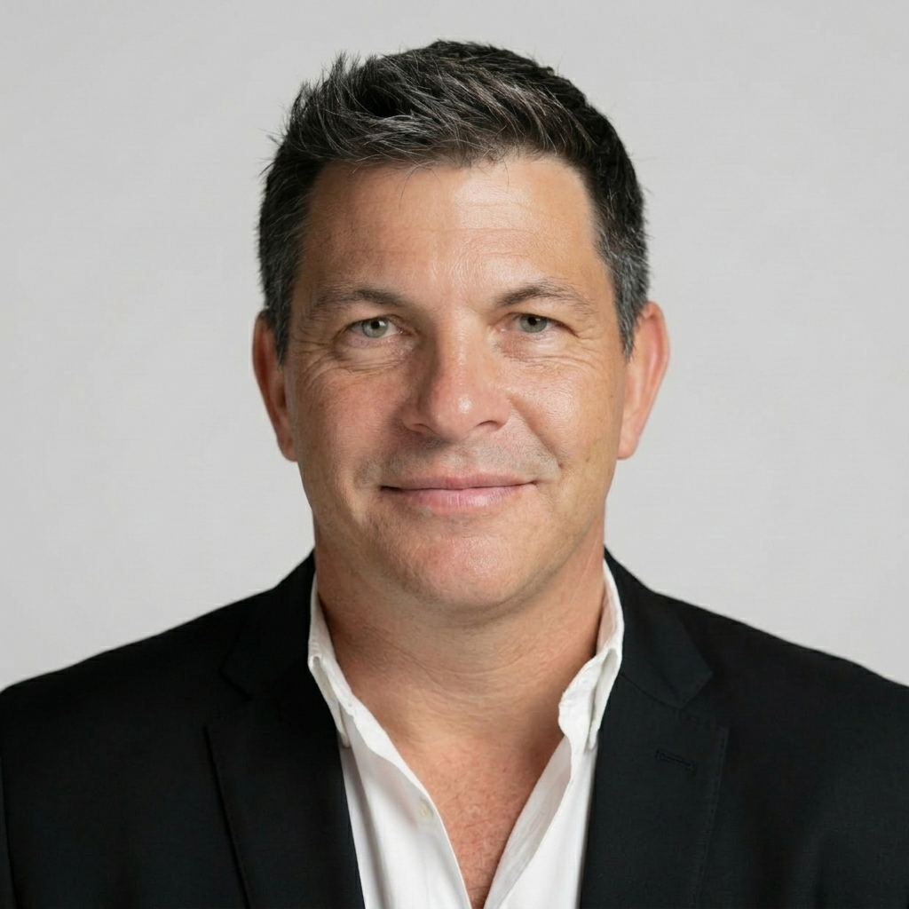
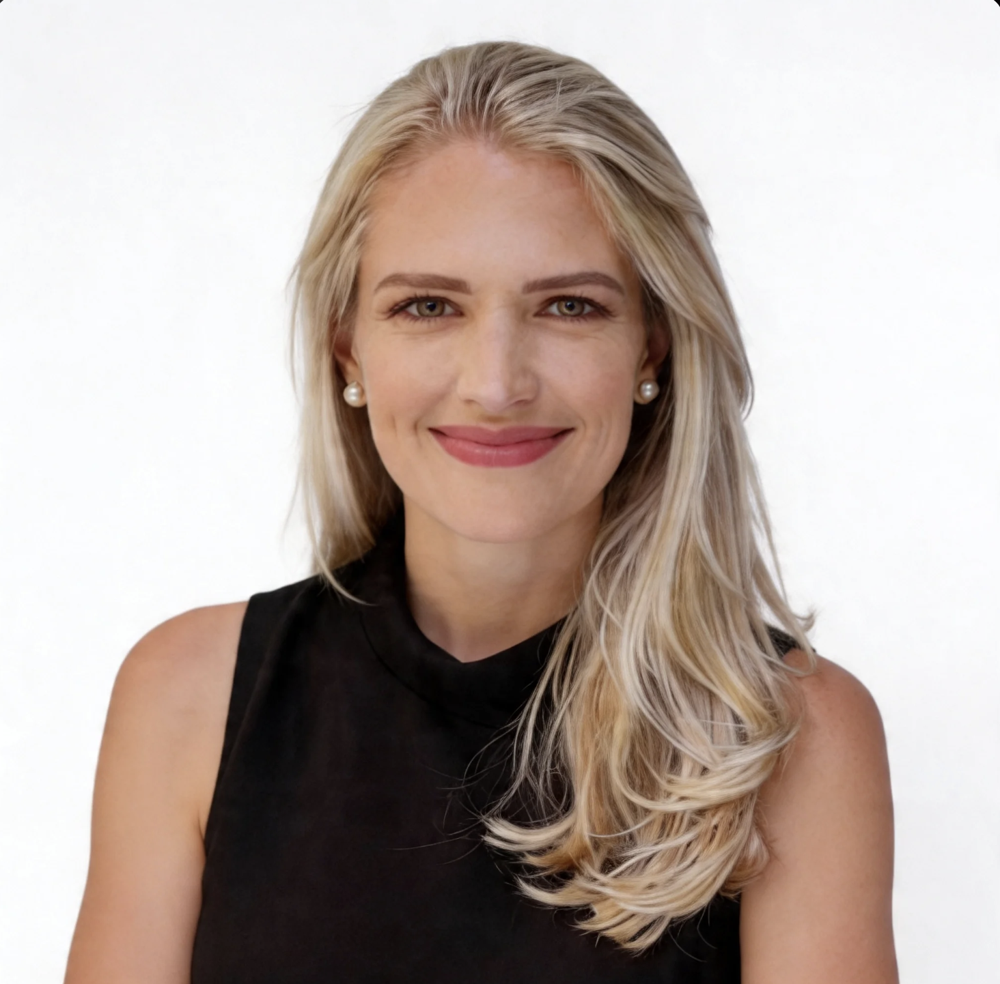

Our Mission
To provide affordable, MBA-level back-office support to South African SMEs, helping them formalize, comply, and grow. We exist to DEFY the 70% startup failure rate by giving entrepreneurs the operational foundation they need to succeed.
We believe every South African entrepreneur deserves access to the same quality back-office support that large corporations take for granted.
To provide affordable, MBA-level back-office support to South African SMEs, helping them formalize, comply, and grow. We exist to DEFY the 70% startup failure rate by giving entrepreneurs the operational foundation they need to succeed.
A South Africa where every micro and small business has access to world-class operational support, regardless of size, budget, or background. We envision compliant, profitable, and sustainable businesses driving economic growth across the continent.
The founders guiding myMBAboard's strategy, impact, growth, and operational discipline.

Laszlo Fagyas is a seasoned business development director with over 29 years of extensive experience spanning diverse industries across Africa and the Middle East. Armed with an MBA from Henley Business School, Laszlo is renowned for his strategic acumen and entrepreneurial spirit, consistently translating vision into reality.
With a proven track record of driving exponential growth and spearheading multi-million-dollar projects, Laszlo brings a unique blend of sales leadership, operational mastery, and multicultural acumen to the table.
As a transformational leader, Laszlo is committed to delivering exceptional results and making meaningful impact. Within myMBAboard, he guides the business toward new heights of excellence and innovation.

Kirsten is a dynamic and passionate professional with a unique career trajectory that spans multiple industries, demonstrating her versatility and problem-solving prowess. With diverse backgrounds across law, accounting, software development, entrepreneurship, finance, and mental health, her pathway reflects her commitment to innovation and positive impact.
As a Firestarter, Kirsten's infectious passion fuels collaboration and inspires those around her to action. Her journey showcases deep expertise in project management, strategic partnerships, and driving impactful programs.
Kirsten is praised for exceptional ethics, attention to detail, and collaborative spirit. She brings the discipline, resilience, and impact focus that help myMBAboard support entrepreneurs with care and precision.
The YES Program is our commitment to developing the next generation of business leaders through training, mentorship and employment opportunities.
From MBA consulting platform to full back-office infrastructure for South African SMEs.
myMBAboard founded as an MBA consulting platform.
Launched the Digital Board of Directors platform.
Pivoted to full back-office support during COVID-19.
YES Program partnership with 29 youth trained.
Expanded to 50+ active clients across Gauteng.
Launched Start My Startup subscription model.
Introduced The Oracle business support channel.
Boss Moms campaign and Micro-Business Funding Hub.